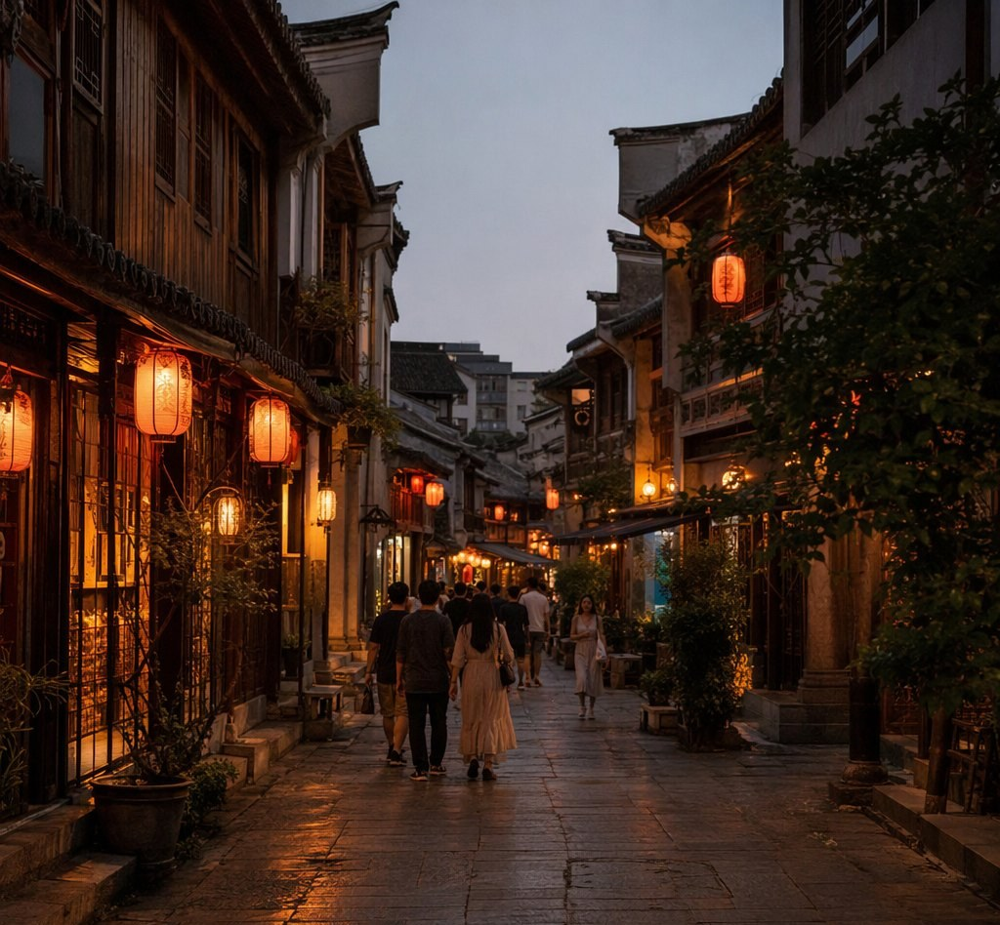

一座城市的慢节奏。从清晨的一碗肉丝粉，到深夜化龙池的民谣——五站经典、八处小众、四味必吃，把长沙走成自己的。
太平老街的青石板被三百年的脚步磨得发亮，红灯笼一到黄昏就次第亮起。贾谊故居隔壁是卖糖油粑粑的小摊，历史与烟火气在这里从不打架。

黑色臭豆腐浇上红亮剁椒，配一杯忌廉雪顶的茶颜悦色——长沙人的下午茶就是这么矛盾又和谐。辣到冒汗时的一口甜，是这座城市特有的温柔。
Impression
石板路、红灯笼，巷子里的烟火气从清晨烧到深夜。
一江两岸，灯火倒映，晚风把白天吹成了霓虹。
臭豆腐配奶茶，辣与甜在这里握手言和。